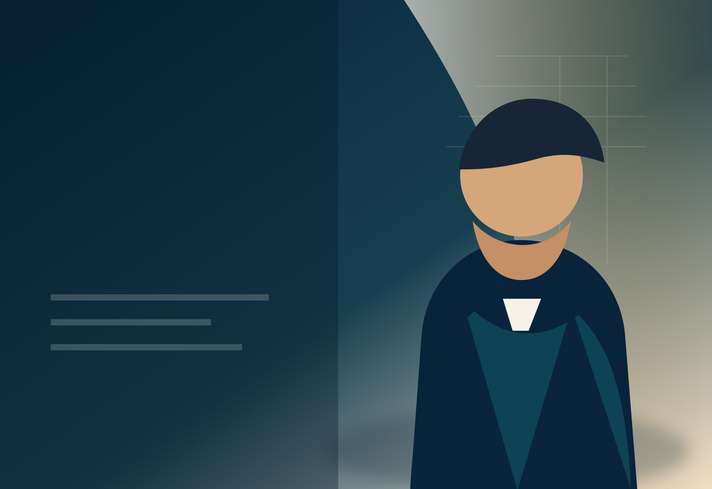

Доверие
Хората имат нужда от политика, която ги вижда и чува.

Пробна версия за президентска кампания
Кампания за достойнство, модерна национална увереност и бъдеще, в което хората искат да останат и да се връщат.
Защо сега?
Хората имат нужда от политика, която ги вижда и чува.
България има нужда от национален разказ, който събира, а не разделя.
Младите, работещите и българите в чужбина трябва да видят смисъл да участват.
Кой е кандидатът?
[Име] влиза в този разговор не като партиен проект, а като човек, който вярва, че България може да бъде общ дом — със силни институции, уважение към хората и модерно национално самочувствие.
Тази пробна биография трябва да бъде заменена с истинската история: характер, опит, причина да участва и доказателства, че може да носи тежест.
Разкажи как искаш да помогнешКакво чуваме от хората?
Искаме нормалност.
Искаме децата ни да останат.
Искаме държава, която не ни унижава.
Искаме политиците да спрат да ни делят.
Искаме България да има самочувствие.
Трите посоки
Национално самочувствие без агресия и институции, които пазят човешкото достойнство.
Срещи, listening tour, уважение и реален разговор вместо говорене отдалеч.
Млади хора, семейства, общности в чужбина и модерна държава, която работи.
Включи се
Тази форма е само за демонстрация. Данни не се изпращат, не се записват и не се използват за реална кампания.
Даренията ще бъдат активирани след юридическо потвърждение.
Следващи срещи
За медиите
Тук ще има кратка биография, снимки за сваляне, контакти за интервюта и официални канали на кампанията.
{kind=link}